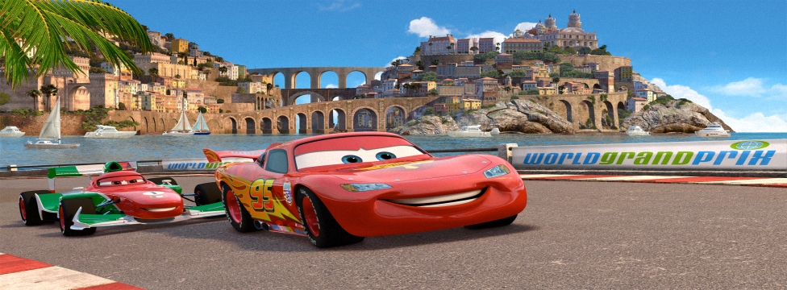

Cars 2：世界大賽(Cars 2)
2006年6月9日

【片長時間】 約１０６分鐘
【作品類別】 迪士尼/皮克斯動畫，長篇劇情動畫片
【原著取材】 由迪士尼電腦動畫【Cars：汽車總動員】衍生劇情
【內容介紹】本片是迪士尼與皮克斯２００６年作品【Cars：汽車總動員】的續集電影，上映同時也推出『３Ｄ立體電影版』。
本片故事帶領觀眾再度回到汽車的世界，全世界當紅的 Lightning McQueen 在他的好朋友 Mater 陪同之下，將出國參加世界賽車大賽，這場比賽要巡迴日本東京、義大利波多港以及英國倫敦，將會是所有參加賽車選手的一大考驗。
不料途中Mater 卻誤打誤撞被英國頂尖的情報員 Finn McMissile 誤認成一位美國探員，也因此捲進一場跨國的大陰謀之中。眼看隨著賽事愈來愈激烈，壞蛋暗中籌畫的陰謀似乎跟這場世界大賽密不可分，到底傻人有傻福的 Mater 能不能揪出幕後的黑手，讓所有賽車選手全身而退呢？這次的故事跨越許多國家，世界知名車款在本片中盡收眼底，且看 Lightning McQueen 要如何尬遍全球吧！